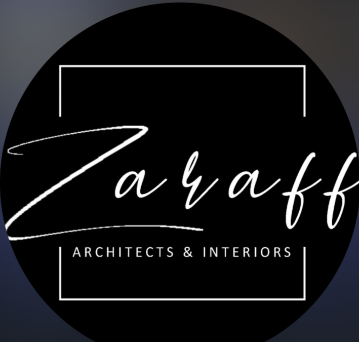

Brand
An architecture and construction studio in India selling design-and-build to homeowners. The page's job is to get a client to send a WhatsApp message, so the system is built for conversion, not for an academic portfolio.

The marks are pure black and white. The system is monochrome because they are.
Principles